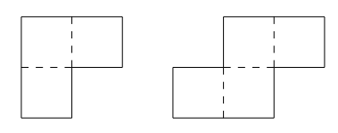

A3. Suppose that \(f\) is a function from \(\mathbb{R}\) to \(\mathbb{R}\) such that
$$f(x) + f(1-\frac{1}{x}) = \text{arctan}(x)$$
for all real \(x \neq 0\). (As usual, \(y = \text{arctan}(x)\) means \(-\pi /2 < y < \pi /2\) and \(\text{tan}(y) = x\).) Find
$$\int_0^1 f(x) dx$$
A4.
Consider a \((2m-1) \times (2n - 1)\) rectangular region, where \(m\) and \(n\) are integers such that \(m,n \geq 4\). This region is to be tiled using tiles of the two types shown:

(The dotted lines divide the tiles into \(1 \times 1\) squares.) The tiles may be rotated and reflected, as long as their sides are parallel to the sides of the rectangular region. They must all fit within the region, and they must cover it completely without overlapping.
What is the minimum number of tiles required to tile the region?